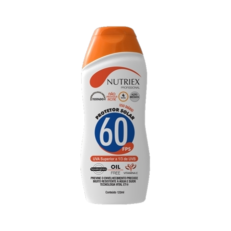
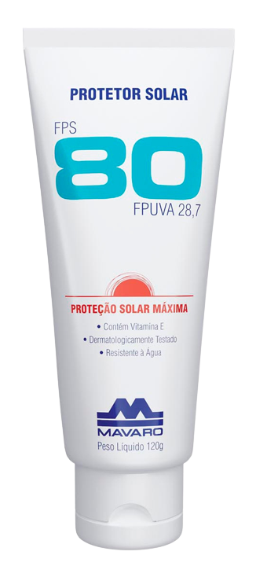

Como a pele reage ao sol
Desvendando o protetor solar
O albinismo é um distúrbio genético onde as pessoas com essas condições possuem pele com pouquíssima melanina. A pele albina é extremamente sensível, poucos minutos no sol, sem proteção, podem provocar queimaduras de 2º e 3º graus na pele de pessoas albinas. As pessoas de pele albina são mais sensíveis ao sol pois, não possuem uma mínima quantidade de melanina que é responsável pela coloração da pele e protege contra a reação da radiação ultravioleta.

